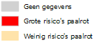
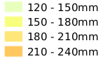
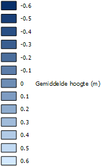
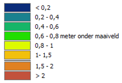
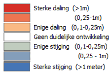

Bij het klimaat wordt massaal gedacht aan de waterhuishouding en hoe wij in ons laag gelegen land, droge voeten houden. Maar wist je, dat de (veen)bodem sneller daalt, dan de zeespiegel stijgt? Dit proces van bodemdaling kan door de klimaatverandering enkel maar versterkt worden.
Het thema droogte gaat over periode(n) met water tekort.
Een (te) lang water tekort in de bodem, heeft gevolgen voor plant, dier, milieu én economie. Want gewassen groeien enkel met voldoende water, een ecosysteem in sloot wordt aangetast door te weinig water, de grondwaterstanden kunnen dalen en zo zijn er nog vele voorbeelden te noemen die samenhangen met een water tekort.
Op de kaart
Risico op paalrot
Vroeger werden woningen op houten palen gebouwd. Deze houten palen staan al eeuwen lang onder water (grondwaterstand). Op het moment dat er een daling in grondwater plaats vindt, komen deze palen in aanraking met zuurstof. Deze zuurstof in combinatie met de vochtige palen, is de ideale situatie voor bacteriën om zich te nestelen en op deze manier de palen flinke schade aan te doen.
Op de kaart zijn gebieden te zien die mogelijk op houten palen zijn gebouwd, en hiermee direct risico met zich meedragen voor de daling van de grondwaterstand.
Potentieel maximaal neerslagtekort (p/jaar)
Het potentieel neerslagtekort is een maatstaaf voor de droogte in ons land. Het wordt berekend aan de hand van het verschil tussen de verdamping en neerslag tijdens de periode april tot en met september. Wanneer er een neerslag tekort optreed heeft dit gevolgen voor de beschikbaarheid van water. In deze periode is er namelijk vaak minder water beschikbaar, maar juist meer nodig.
Gemiddeld laagste grondwaterstand
Legenda
Risico op paalrot
- 
Potentieel maximaal neerslagtekort
- 
Gemiddelde grondwaterstand (m)
- 
Gemiddeld laagste grondwaterstand huidig
- 
Gemiddeld laagste grondwaterstand 2050
- 